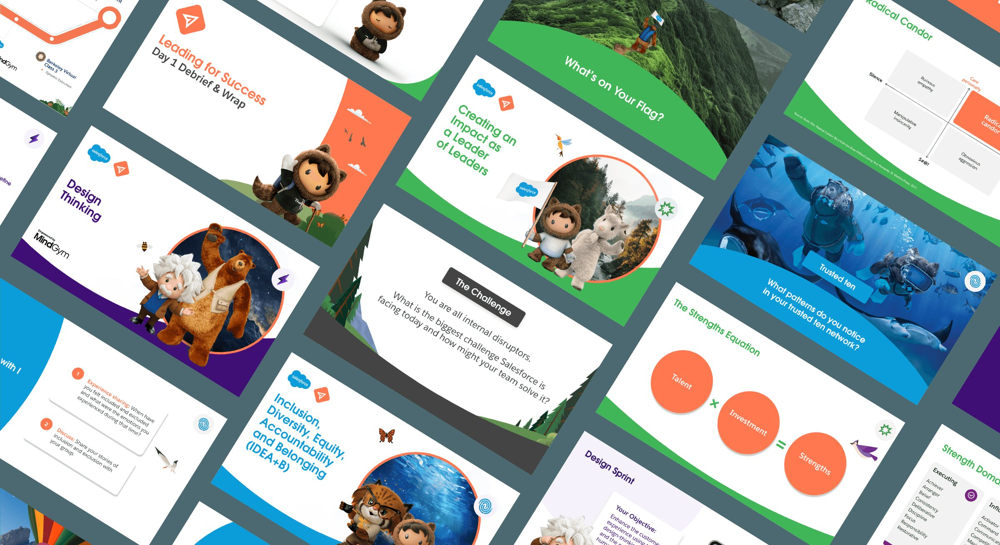
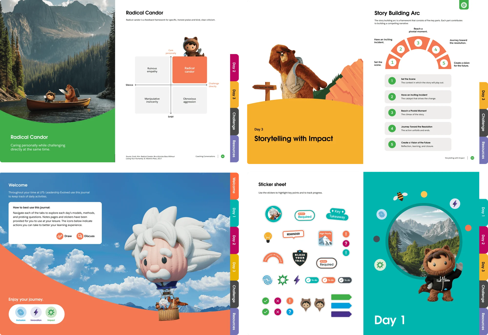
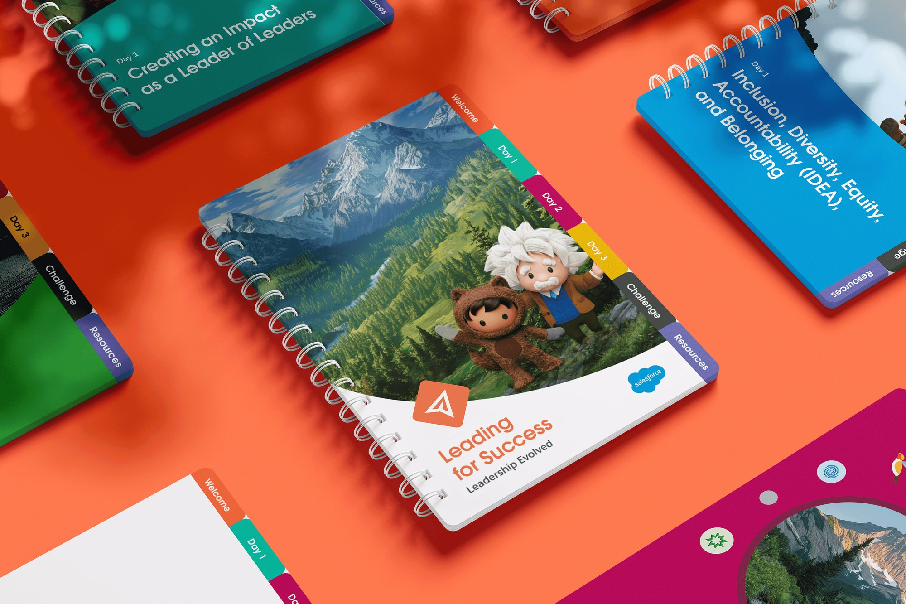
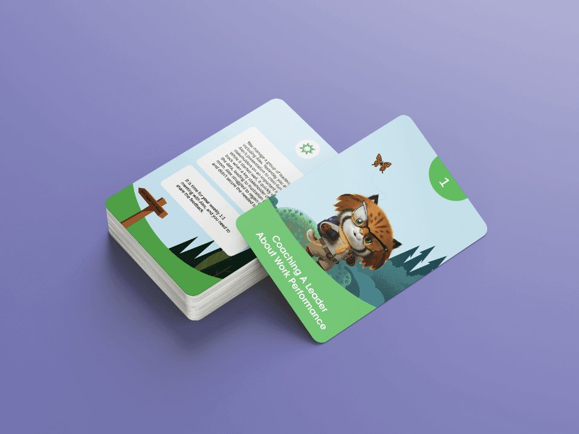
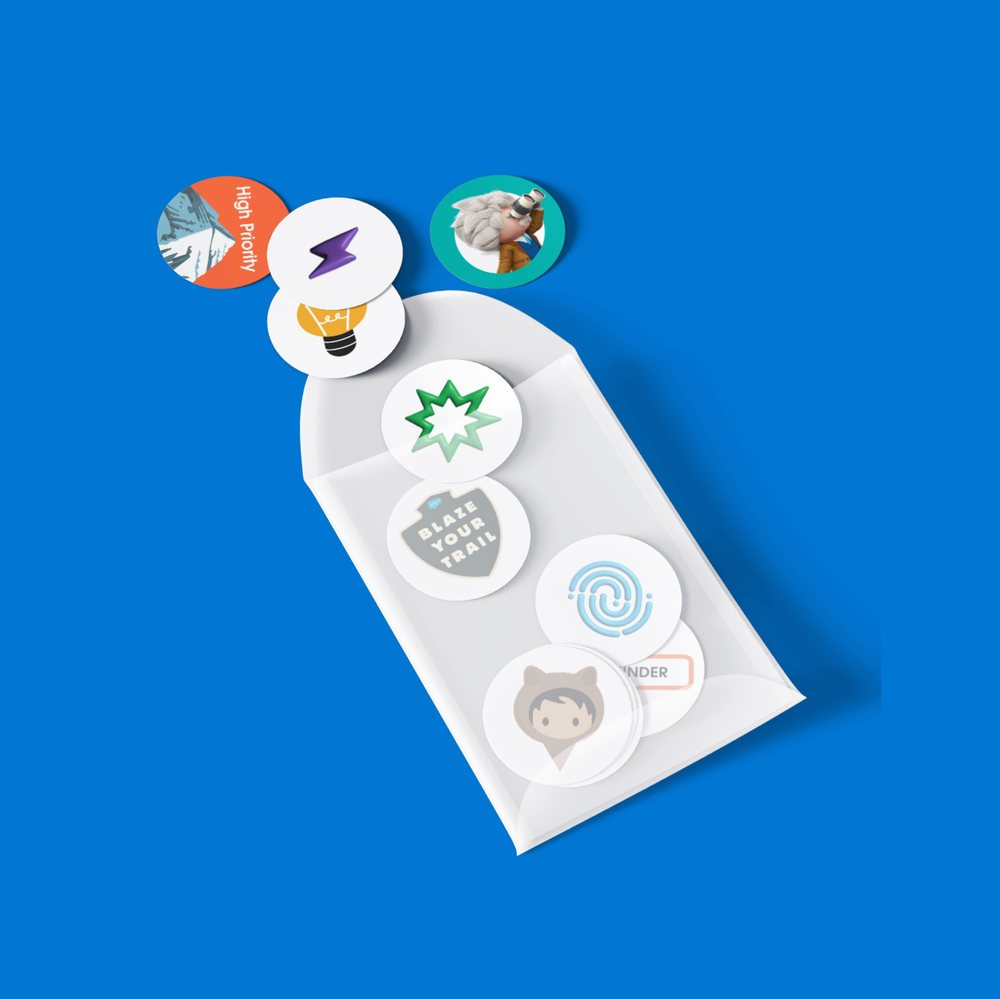
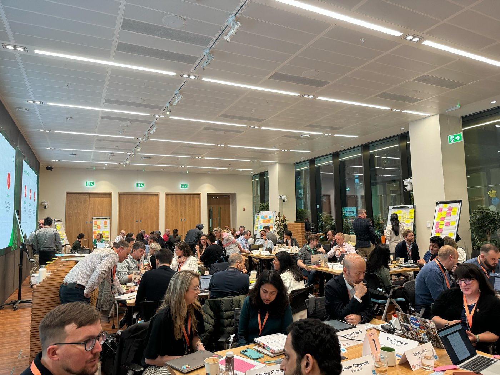
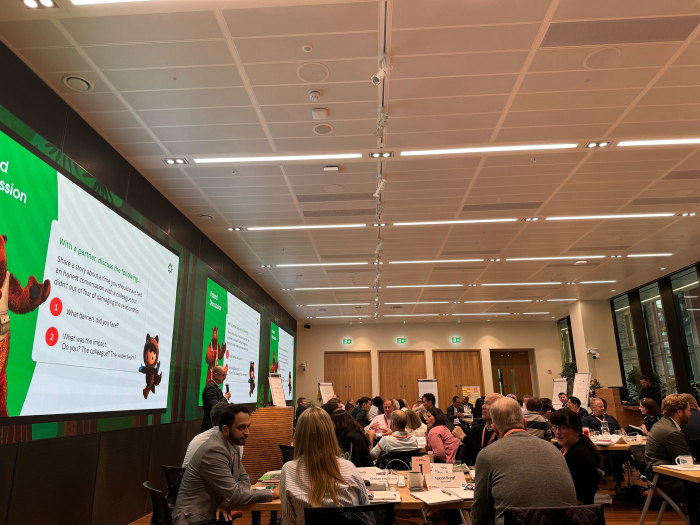

Materials felt disconnected from the learnings
Salesforce
Leading for Success
Refreshed the design system and designed digital & physical products for a leadership program at Salesforce

Overview
A leadership program at Salesforce needed its materials to match the learnings. I refreshed the design system and designed the journal, slide deck, card deck and stickers so the whole experience felt connected, and stayed useful after the program ended.
My role
- Lead designer, strategist
- UX Research
- Design Thinking
- Brand Design
Duration
4 Weeks

 Amal ShaheediLead Designer
Amal ShaheediLead DesignerGenae Knowles
Katie Didio
Dana Ferruzzi
Products I designed
One system, four touchpoints
- Journal
- PPT Deck
- Card Deck
- Stickers
Feedback
From last year’s participants, we heard…
Salesforce references work well
The journal wasn’t relevant or useful after the programme
Solutions
Solutions we proposed…
Consistent design system
Partnered with content designers to create a consistent design system that matched the learnings
Made for Salesforce
Added elements like Salesforce specific quotes, reflection prompts and stickers
An evergreen guide
Shaping content, infographics, and resources that can be referenced over time
Process
So how did we get here?
Asking the right questions
Led a session on Miro with Salesforce to brainstorm their vision. We looked at the previous system to see what could be improved upon
Before

After

1
Design refresh
Brighter colors, using Salesforce characters to make the journal engaging
2
Infographics
Redesigning infographics with visual hierarchy
3
Section dividers
One page dividers for a quick navigation system that matched the slides shown
Branding
A journal worth keeping

- 1
AI-composited scenes
Using AI in Photoshop to place characters into scenic landscapes for visual interest
- 2
Bookmark tabs
Bookmark with module logo as a visual indicator
- 3
Color-coded modules
Color-coded the 3 main modules
- 4
Stickers
Stickers for personalization
- 5
Day by day
Divided the journal into days so the flow matched the experience




Impact
An NPS of 82
Images from the press conference show the journals and the slide deck in use. We got an excellent score of NPS 82 for this program.

